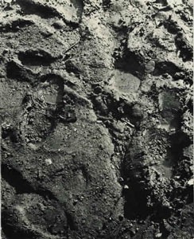
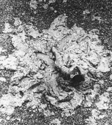
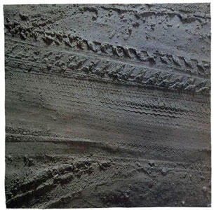
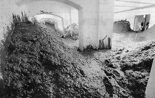
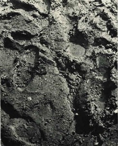
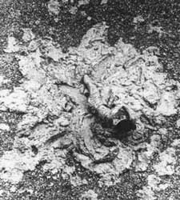
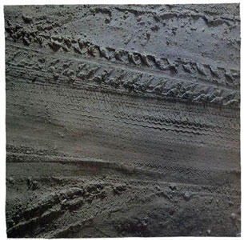
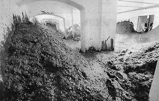

mud  Laszlo Moholy-Nagy: Footprints in the Mud, 1929  Kazuo Shiraga, 1956  Mark Boyle: The Swiss Site, 1978-1979  Santiago Sierra: Haus im Schlamm, 2005
mud
 Laszlo Moholy-Nagy: Footprints in the Mud, 1929
 Kazuo Shiraga, 1956
 Mark Boyle: The Swiss Site, 1978-1979
 Santiago Sierra: Haus im Schlamm, 2005